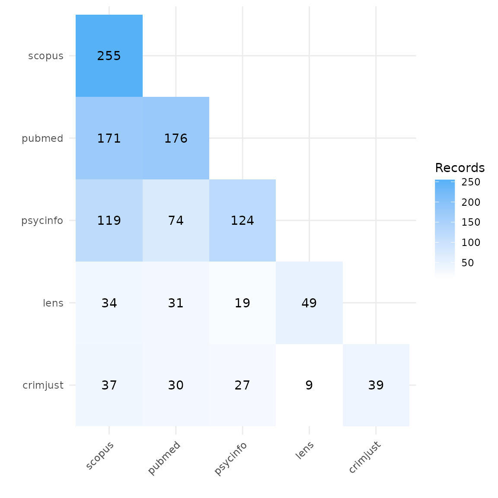
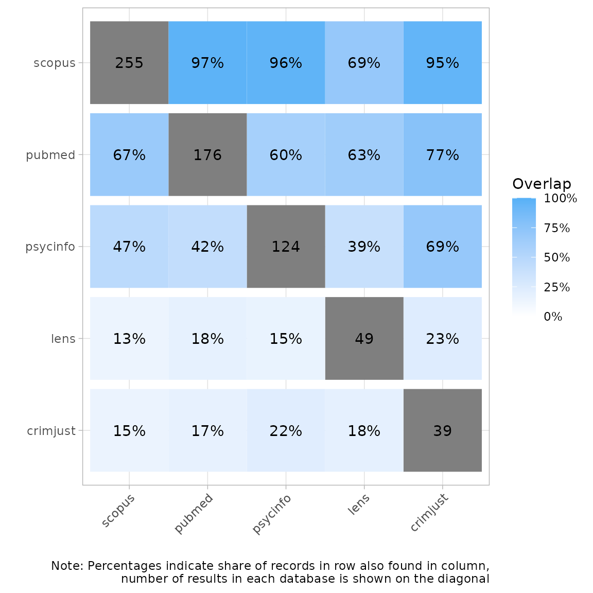
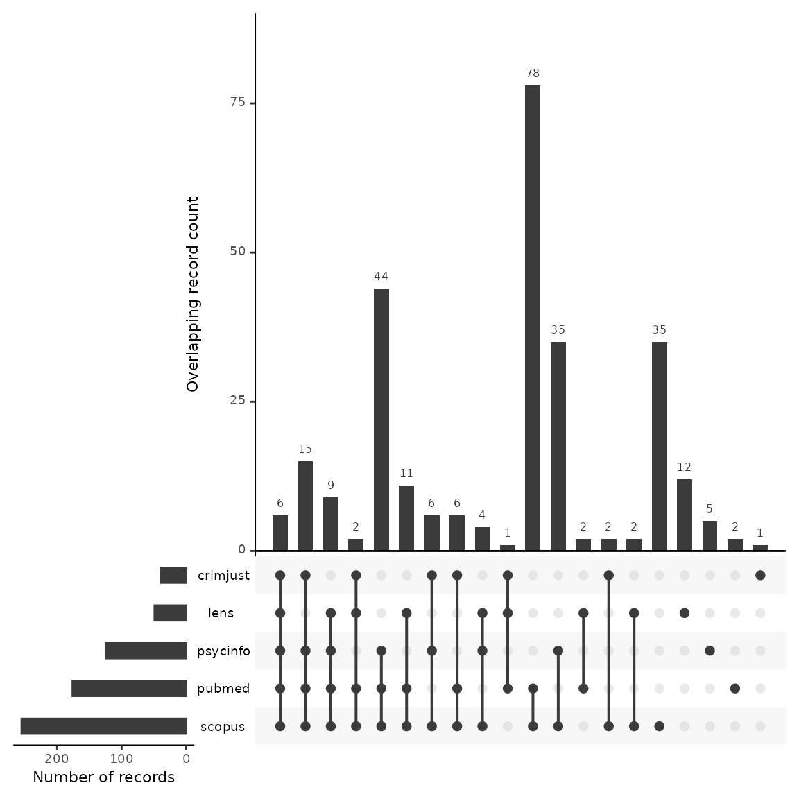
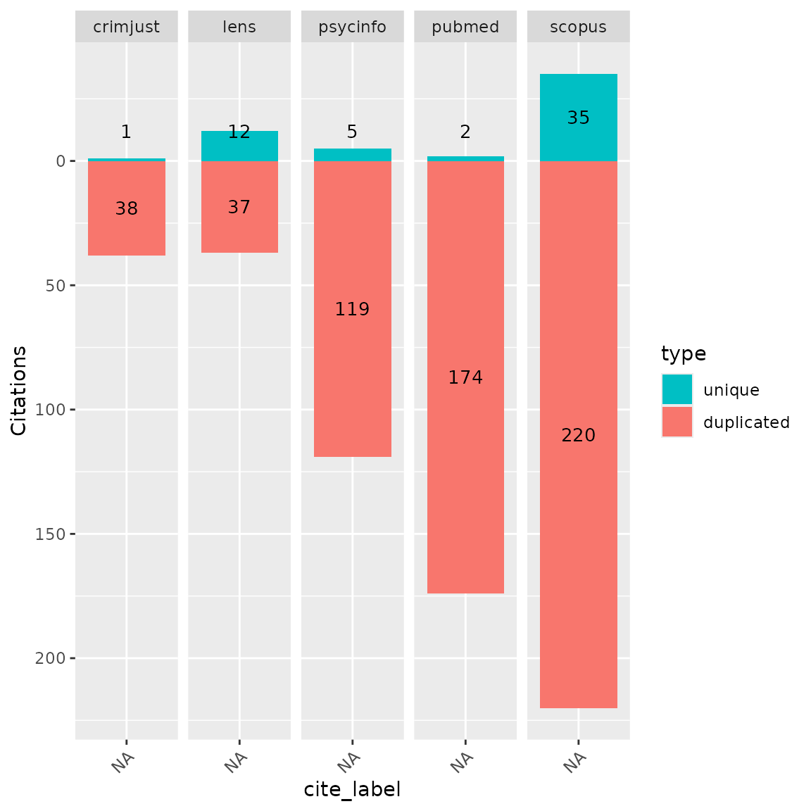
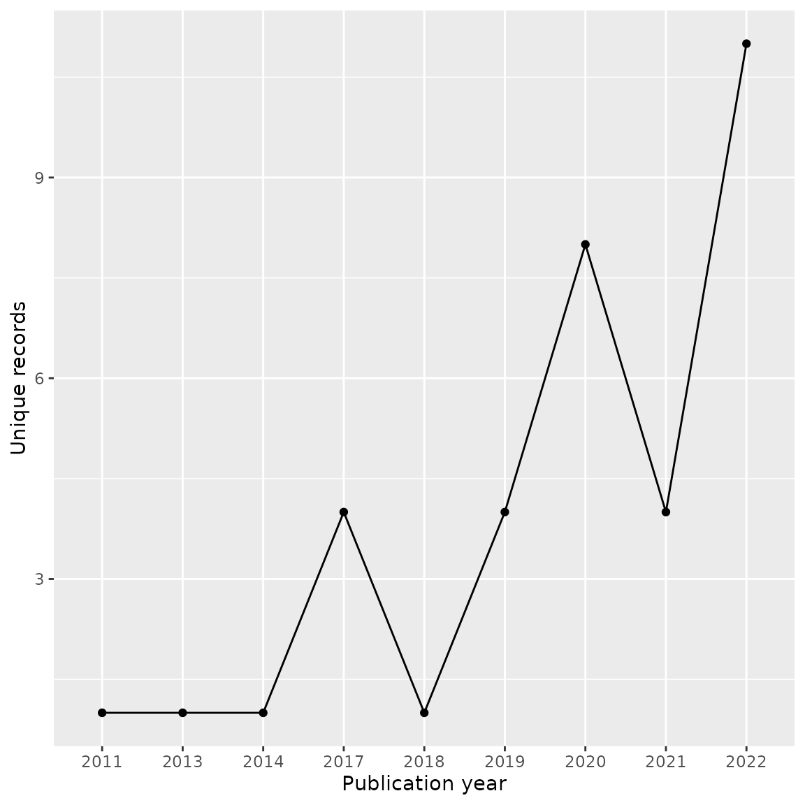
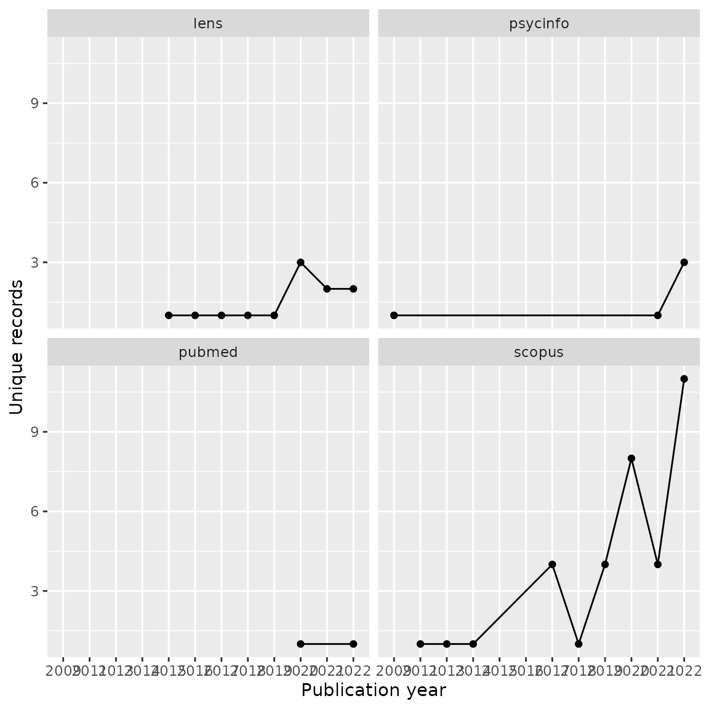

Comparing Database Topic Coverage
2026-05-13
Source:vignettes/citesource_vignette_db-topic-coverage.Rmd
citesource_vignette_db-topic-coverage.RmdAbout this vignette
CiteSource can be used to examine topical overlap between databases. In this example, we are interested in the overlap among databases, both multi-disciplinary and subject-specific, for the literature on the harmful effects of gambling addiction. To assess this, we ran a very specific search for the term “gambling harm*” in the title and abstract fields of the following databases: Lens, Scopus, Criminal Justice Abstracts, PsycInfo and Medline.
Installation and setup
#install.packages("CiteSource")
library(CiteSource)Import files from multiple sources
Users can import multiple RIS or bibtex files into CiteSource, labeling each with source information such as the database or platform it came from.
citation_files <- list.files(path = "topic_data", pattern = "\\.ris", full.names = TRUE)
citations <- read_citations(citation_files,
cite_sources = c("crimjust", "lens", "psycinfo", "pubmed", "scopus"),
tag_naming = "best_guess")
#> Import completed - with the following details:
#> file cite_source cite_string cite_label
#> 1 20221207_gambling-harms_crimjust_41.ris crimjust <NA> <NA>
#> 2 20221207_gambling-harms_lens_49.ris lens <NA> <NA>
#> 3 20221207_gambling-harms_psycinfo_124.ris psycinfo <NA> <NA>
#> 4 20221207_gambling-harms_pubmed_176.ris pubmed <NA> <NA>
#> 5 20221207_gambling-harms_scopus_255.ris scopus <NA> <NA>
#> citations
#> 1 41
#> 2 49
#> 3 124
#> 4 176
#> 5 255Deduplication and source information
CiteSource merges duplicate records while preserving the
cite_source metadata field, so the origin of each record is
retained through deduplication.
unique_citations <- dedup_citations(citations)
n_unique <- count_unique(unique_citations)
source_comparison <- compare_sources(unique_citations, comp_type = "sources")Plot heatmap to compare source overlap
Heatmap by number of records
A heatmap shows the total number of records from each database and the number of overlapping records for each pair. Here, Scopus yielded the highest number of records on gambling harms, and Criminal Justice Abstracts the least.
plot_source_overlap_heatmap(source_comparison)
Heatmap by percentage of records
The percentage heatmap shows what share of each row’s records were also found in each column. Here, 67% of records in Scopus were also found in PubMed, while 97% of PubMed records were found in Scopus.
plot_source_overlap_heatmap(source_comparison, plot_type = "percentages")
Plot an upset plot to compare source overlap
An upset plot provides more detail about shared and unique records across all source combinations. Scopus had the most unique records (n=35); Criminal Justice Abstracts had only one. Six records were found in every database.
plot_source_overlap_upset(source_comparison, decreasing = c(TRUE, TRUE))
Bar plots of unique and shared records
plot_contributions() provides a convenient way to
visualize unique and shared records by source. The
center = TRUE argument splits the bars so unique records
extend in one direction and shared records in the other.
plot_contributions(n_unique, center = TRUE)
Analyzing unique contributions
To examine which records are only found in a single database, filter
n_unique for unique == TRUE and rejoin with
unique_citations to recover the full bibliographic
data.
unique_lens <- n_unique |> dplyr::filter(cite_source == "lens", unique == TRUE) |> dplyr::inner_join(unique_citations, by = "duplicate_id")
unique_psycinfo <- n_unique |> dplyr::filter(cite_source == "psycinfo", unique == TRUE) |> dplyr::inner_join(unique_citations, by = "duplicate_id")
unique_pubmed <- n_unique |> dplyr::filter(cite_source == "pubmed", unique == TRUE) |> dplyr::inner_join(unique_citations, by = "duplicate_id")
unique_crimjust <- n_unique |> dplyr::filter(cite_source == "crimjust", unique == TRUE) |> dplyr::inner_join(unique_citations, by = "duplicate_id")
unique_scopus <- n_unique |> dplyr::filter(cite_source == "scopus", unique == TRUE) |> dplyr::inner_join(unique_citations, by = "duplicate_id")Analyze journal titles
Looking at the top journals producing unique records in Scopus that were not found in any other database:
scopus_journals <- unique_scopus |>
dplyr::group_by(journal) |>
dplyr::summarise(count = dplyr::n()) |>
dplyr::arrange(dplyr::desc(count))
knitr::kable(scopus_journals[1:10, ])| journal | count |
|---|---|
| International Gambling Studies | 5 |
| Current Addiction Reports | 3 |
| International Journal of Mental Health and Addiction | 3 |
| Journal of Gambling Issues | 3 |
| Computers in Human Behavior | 2 |
| Journal of Public Health (Germany) | 2 |
| Applied Research in Quality of Life | 1 |
| Canadian Journal of Addiction | 1 |
| Cognition and Addiction: A Researcher’s Guide from Mechanisms Towards Interventions | 1 |
| Critical Public Health | 1 |
Analyze publication years
Publication year analysis can reveal whether a database’s unique contributions are concentrated in a particular time period. Here the unique records from Scopus are mostly recent, which may indicate more current coverage on gambling harms.
unique_scopus |>
dplyr::group_by(year) |>
dplyr::summarise(count = dplyr::n()) |>
ggplot2::ggplot(ggplot2::aes(year, count, group = 1)) +
ggplot2::geom_line() +
ggplot2::geom_point() +
ggplot2::xlab("Publication year") +
ggplot2::ylab("Unique records")
We can also compare publication years of unique records across each
database using facet_wrap:
all_unique <- dplyr::bind_rows(unique_scopus, unique_lens, unique_pubmed, unique_psycinfo)
all_unique |>
dplyr::group_by(cite_source.x, year) |>
dplyr::summarise(count = dplyr::n()) |>
ggplot2::ggplot(ggplot2::aes(year, count, group = 1)) +
ggplot2::geom_line() +
ggplot2::geom_point() +
ggplot2::facet_wrap(~ cite_source.x) +
ggplot2::xlab("Publication year") +
ggplot2::ylab("Unique records")
Exporting for further analysis
CiteSource can export deduplicated results as CSV, RIS, or BibTeX files, and reimport them to resume analysis later.
#export_csv(unique_citations, filename = "unique-by-source.csv", separate = "cite_source")
#export_ris(unique_citations, filename = "unique_citations.ris", source_field = "DB", label_field = "N1")
#export_bib(unique_citations, filename = "unique_citations.bib", include = c("sources", "labels", "strings"))
#reimport_csv("unique-by-source.csv")In summary
CiteSource can evaluate coverage of different databases for a specific topic. In this example, Scopus has the most content on gambling harms, including the most unique content and the best coverage for earlier years. Lens also contributes a proportionally large amount of unique records, perhaps representing grey literature. Analysis of this kind can help determine which databases to include in an evidence synthesis search, or inform collection development decisions.